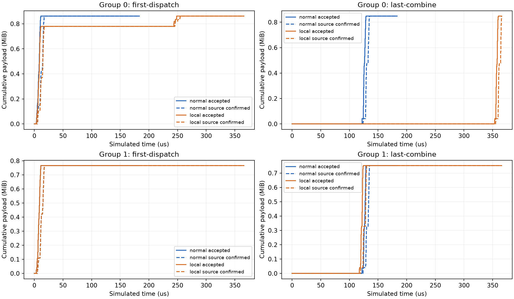

本轮只选择128卡Clos。15份不同R1-AWQ/MMLU真实专家选择、两个EP64组，同一LLMServingSim/ASTRA/native RDMA ns-3执行。每rank每层4专家，各层400G、每跳1us。
normal不注入故障；local只在GPU20的前100us丢弃目的数据。两者均开启选择性重传与相同拥塞控制，其他配置完全相同。
| 条件 | 整段任务 µs | 故障组0 µs | 健康组1 µs | 网络排空 µs |
|---|---|---|---|---|
| normal | 134.994 | 134.994 | 134.962 | 183.357 |
| local | 365.904 | 365.904 | 130.135 | 365.904 |
结果：故障组变慢，健康组反而提前4.827us完成。 整段任务多等230.910us，但健康组提前3.58%。本例不支持“恢复一定拖慢其他任务”的假设。
两组实际共用80个有向出口。健康组ECN标记16→1包，累计逐跳停留483812→280306ns，支持竞争减轻的解释；累计值不是可相加的业务收益。
这是成熟恢复方法和声明阶段依赖的作用。100us后的141.392us间隔没有被证明可以安全消除；本轮没有测得新算法收益。
目标GPU在故障窗内丢弃24/24个数据包；全程为24/46包。整个集群端点观察为24/1916包（1.253%）。因此100%只描述目标位置及指定窗口。未直接丢包的组1没有丢包，也没有自然交换机丢弃或PFC暂停。

230.910us是本例故障成本，不是承诺的优化收益。本例先否定“健康组一定被恢复拖慢”的解释。下一步先补齐现代通信的rank去重及完成语义，再看强基线下是否仍有可定位的剩余损失。
模型边界：只有真实专家选择；计算、到达、部署及H100标签为声明参考。没有运行GPU、完整R1或Prefill；零协调成本阶段门限不是完整DeepEP，当前逐专家贡献还未去重。
完整说明 · 曲线与端点/消息CSV · 核验结果 · 关键恢复时序 · 执行与资源收据